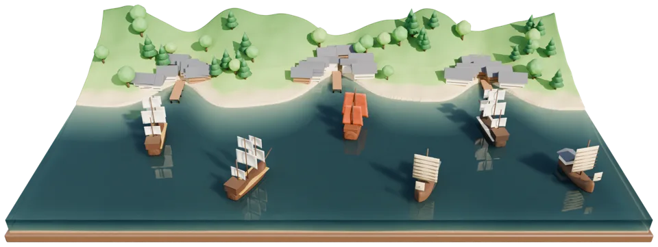
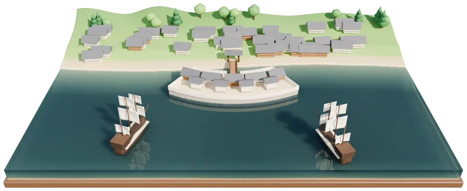

文字の大きさ
トップ ＞ 幕府の政治と人々の暮らし ＞ 第3時
第3時幕府は外国との関わりをどう変えたか
つかむ調べるまとめる
教科書 p.148〜151
学習問題江戸幕府は、どのようにして全国を治めていったのだろう。
この時間のめあて江戸幕府は、外国との関わりを、どのように変えたのだろう。
この時間のポイント
1鎖国の前と後

江戸時代の初めごろは、スペインやポルトガルの船がさかんにおとずれ、日本人の商人も東南アジアに出かけていました。
教科書で確かめようp.148 資料ウ・p.149 本文
2鎖国への道
島原（長崎県）や天草（熊本県）では、重い年貢とキリスト教への厳しい取りしまりに反対して、約3万7000人の人々が一揆を起こしました。
教科書で確かめようp.148〜149
3なぜ鎖国をしたのか
オランダとの貿易は、長崎の出島で、幕府の役人が見はる中で行われました。
教科書で確かめようp.149 本文・資料カ
4出島

長崎の出島（イメージ。形は p.149 資料カで確かめよう）
教科書で確かめようp.149 資料カ・キ
5鎖国のもとでの4つの窓口
長崎・対馬・薩摩・松前の4つの窓口（イメージ）
鎖国のもとでも、朝鮮とは対馬藩、琉球王国とは薩摩藩、アイヌの人たちとは松前藩を窓口に、交流や交易が行われました。長崎では、幕府が直接、中国やオランダと貿易しました。
教科書で確かめようp.150 資料イ
6相手から見ると
アイヌの人たちは、不利な取り引きをしいられたり、自然をあらされたりして、生活をおびやかされるようになりました。琉球は、年貢を納める負担が生じ、貿易の利益の多くは薩摩藩が手に入れるようになりました。
教科書で確かめようp.151 本文
考えてみよう
- 江戸幕府は、外国との関わりを、どのように変えたのだろう。
- 鎖国をして、幕府にとってよかったことは何だろう。相手の側から見ると、どうだっただろう。
- 縄文
- 弥生
- 古墳
- 飛鳥
- 奈良
- 平安
- 鎌倉
- 室町
- 安土桃山
- 江戸
- 明治
- 大正
- 昭和
- 平成
- 令和